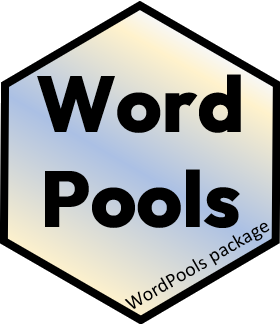
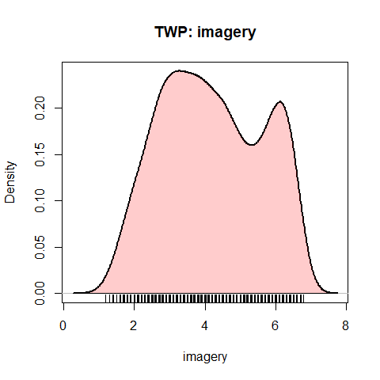
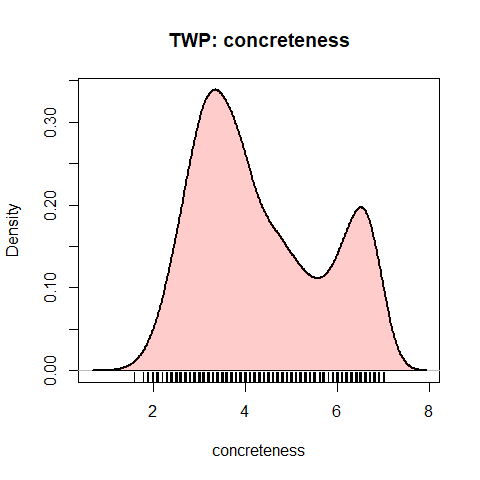

WordPools 
Word Pools Used in Studies of Learning and Memory
Version: 1.2.0
This package collects several classical word pools used most often to provide lists of words in psychological studies of learning and memory.
Each word pool consists of a population of words, together with various descriptive measures (number of letters, number of syllables, word frequency, etc.) and normative measures (imagery, concreteness, etc.) that can be used in experimental designs to vary and control such factors.
One typical use is to design an experiment where stimulus words vary systematically in one or more variables across conditions, but other variables are controlled by random selection.
Other uses are to examine the factor structure of relations among these measures of word properties.
Word pools
The following word pools are available in the package:
- Toronto Word Pool (
TWP) - from Friendly et al. (1982), contains 1080 words in various grammatical classes (nouns, adjectives, and verbs), taken originally from the Thorndike-Lorge (1944) norms) - Paivio word pool (
Paivio) - The Paivio, Yuille & Madigan (1968) word pool contains 925 nouns, together with average ratings of these words on imagery, concreteness and meaningfulness, along with other variables - Battig - Montague Categorized Word Norms (
Battig) - This dataset, from Battig & Montague (1968) comprises a ranked list of 5231 words listed in 56 taxonomic categories by people who were asked to list as many exemplars of a given category. - Category Properties (
CatProp) - Properties of the 56 taxonomic categories from the Battig-Montague category norms published by Joelson and Hermann (1978)
Selecting lists
A simple function, pickList() is provided for the task of selecting several random samples of words from a given word pool, with restrictions on the ranges of available variables.
A legacy web app (no longer maintained) for randomly selecting lists of words from the Paivio word pool is provided at Friendly (2006) Paivio Word list generator.
A shiny app for randomly selecting lists of words from the Paivio word pool is provided at Friendly & Dubins (2019a) Paivio Word list generator.
A similar app for selecting lists from the Toronto Word Pool is provided at Friendly & Dubins (2019b) Toronto Word Pool list generator.
Examples
Using `pickList()
Select two lists of items of 5 items each from the Paivio pool:
set.seed(42) # for reproducibility
pickList(Paivio, nitems=5, nlists=2)
#> list itmno word imagery concreteness meaningfulness frequency syl letters freerecall
#> 578 1 578 misconception 2.30 1.79 3.96 1 4 13 0.531
#> 333 1 333 flag 6.60 6.94 6.54 50 1 4 0.219
#> 159 1 159 christmas 6.70 4.53 8.76 50 2 9 0.563
#> 78 1 78 basement 6.03 6.83 6.83 8 2 8 0.500
#> 238 1 238 destruction 5.27 3.61 5.32 37 3 11 0.469
#> 152 2 152 charm 4.70 2.17 6.13 50 1 5 0.219
#> 654 2 654 performer 5.43 6.01 6.48 4 3 9 0.344
#> 52 2 52 arrow 6.57 7.00 6.80 37 2 5 0.313
#> 133 2 133 capacity 3.40 2.41 5.44 37 4 8 0.094
#> 315 2 315 facility 2.73 2.20 4.64 23 3 8 0.281Using a list of ranges for imagery and concreteness:
L <- list(imagery=c(1,5),
concreteness=c(1,4))
pickList(Paivio, ranges =L, nitems=4)
#> list itmno word imagery concreteness meaningfulness frequency syl letters freerecall
#> 57 1 57 atrocity 3.67 2.38 4.17 2 4 8 0.469
#> 281 1 281 effort 3.33 2.22 5.75 100 2 6 0.281
#> 457 1 457 inducement 2.93 2.34 3.68 3 3 10 0.406
#> 316 1 316 fact 2.20 3.31 4.29 100 1 4 0.438Define ranges for low and high on imagery, concreteness, meaningfulness These go from low - median, and median-high on each variable
vars <- 3:5
(low <- as.data.frame(apply(Paivio[,vars], 2, fivenum))[c(1,3),])
#> imagery concreteness meaningfulness
#> 1 1.63 1.18 1.92
#> 3 5.17 5.72 5.92
(high <- as.data.frame(apply(Paivio[,vars], 2, fivenum))[c(3,5),])
#> imagery concreteness meaningfulness
#> 3 5.17 5.72 5.92
#> 5 6.90 7.70 9.22Select two lists of 10 low/high imagery items:
lowI <- pickList(Paivio, low[,"imagery", drop=FALSE], nitems=10, nl=2)
highI <- pickList(Paivio, high[,"imagery", drop=FALSE], nitems=10, nl=2)
# compare means
colMeans(lowI[,c(4:8)])
#> imagery concreteness meaningfulness frequency syl
#> 3.783 3.416 5.232 39.000 2.400
colMeans(highI[,c(4:8)])
#> imagery concreteness meaningfulness frequency syl
#> 6.161 6.301 6.702 35.300 1.900Using dplyr
The dplyr package makes it easy to select items meeting arbitrary criteria. Here we filter() on ranges for three variables in the TWP to get a reduced pool:
library(dplyr)
#>
#> Attaching package: 'dplyr'
#> The following objects are masked from 'package:stats':
#>
#> filter, lag
#> The following objects are masked from 'package:base':
#>
#> intersect, setdiff, setequal, union
selected <- TWP |>
filter( canadian == 0) |> # remove Canadian spellings
filter( imagery <= 5, concreteness <= 4, frequency <= 30) |>
select(word, imagery:frequency )
str(selected)
#> 'data.frame': 269 obs. of 5 variables:
#> $ word : chr "abide" "absorb" "abuse" "accord" ...
#> $ imagery : num 2 4.6 4.5 1.8 4.2 2.1 3.7 3.2 3.3 1.6 ...
#> $ concreteness: num 2.8 3.6 3.4 2.6 3.5 3.6 3 3.9 3.5 2 ...
#> $ letters : int 5 6 5 6 6 8 6 5 6 4 ...
#> $ frequency : int 7 13 18 9 10 3 10 13 10 10 ...Then, draw two random lists:
nitems <- 5
nlists <- 2
lists <- selected |>
sample_n( nitems*nlists, replace=FALSE) |>
mutate(list = rep(1:nlists, each=nitems))
str(lists)
#> 'data.frame': 10 obs. of 6 variables:
#> $ word : chr "virtue" "gravely" "abuse" "upward" ...
#> $ imagery : num 3.1 2.1 4.5 4 4.6 5 4.4 4.2 3.1 3.5
#> $ concreteness: num 2.1 2.8 3.4 4 3.9 3.3 3.1 3.5 3.2 2.8
#> $ letters : int 6 7 5 6 7 6 8 6 6 4
#> $ frequency : int 30 7 18 27 24 17 24 10 13 7
#> $ list : int 1 1 1 1 1 2 2 2 2 2
lists |> knitr::kable()| word | imagery | concreteness | letters | frequency | list |
|---|---|---|---|---|---|
| virtue | 3.1 | 2.1 | 6 | 30 | 1 |
| gravely | 2.1 | 2.8 | 7 | 7 | 1 |
| abuse | 4.5 | 3.4 | 5 | 18 | 1 |
| upward | 4.0 | 4.0 | 6 | 27 | 1 |
| nervous | 4.6 | 3.9 | 7 | 24 | 1 |
| horror | 5.0 | 3.3 | 6 | 17 | 2 |
| charming | 4.4 | 3.1 | 8 | 24 | 2 |
| accuse | 4.2 | 3.5 | 6 | 10 | 2 |
| behave | 3.1 | 3.2 | 6 | 13 | 2 |
| envy | 3.5 | 2.8 | 4 | 7 | 2 |
Density plots
A simple function gives a density plot of any variable. It’s interesting that these two are bimodal.
plotDensity(TWP, "imagery")
plotDensity(TWP, "concreteness")
References
Paivio, A., Yuille, J.C. & Madigan S. Concreteness, imagery and meaningfulness for 925 nouns. (1968) Journal of Experimental Psychology, Monograph Supplement, 76, No.1, pt.2.
Battig, W.F. & Montague, W.E. (1969). Category norms for verbal items in 56 categories: A replication and extension of the Connecticut norms. Journal of Experimental Psychology, 80 (1969), pp. 1-46
Friendly, M. (2006) Paivio Word list generator
Friendly, M. & Dubins, M. (2019a) Paivio Word list generator, Online application.
Friendly, M. & Dubins, M. (2019b) Toronto Word Pool list generator, Online application.
Friendly, M., Franklin, P., Hoffman, D. & Rubin, D. The Toronto Word Pool, Behavior Research Methods and Instrumentation, 1982, 14(4), 375-399. TWP paper PDF